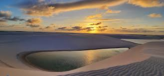

Localizado no extremo norte da Região Nordeste, o Maranhão é famoso por seus contrastes naturais, com destaque para os Lençóis Maranhenses, um dos destinos turísticos mais únicos do Brasil. Sua capital, São Luís, é rica em história, com um centro histórico colonial muito bem preservado. A economia do estado é voltada para a agricultura, especialmente soja, arroz e milho, além da produção de energia.
